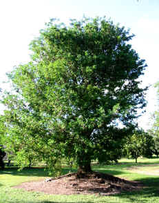
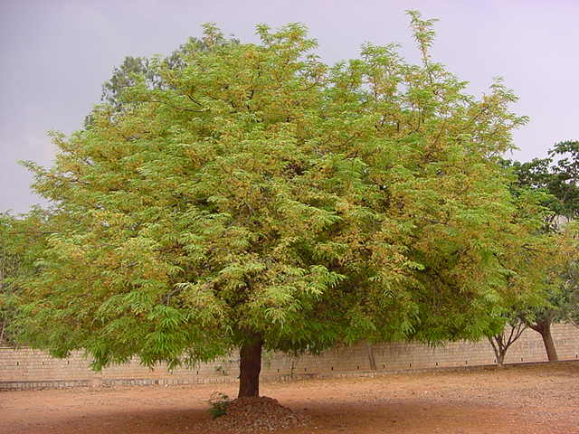
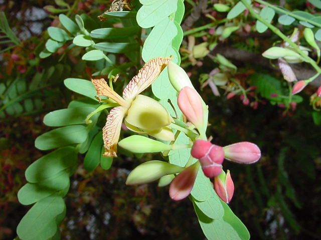
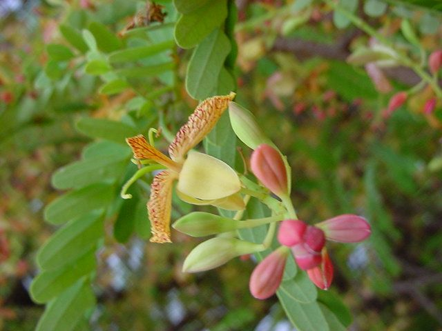
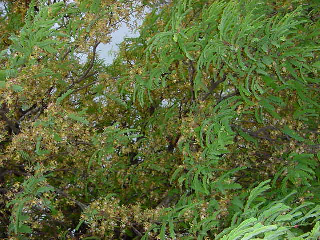

Tamarindus
indica
L.
Taxonomic Details

----- Correct Name
----- Classification
----- Synonyms
----- Common Names
Other
Biological Details
----- Habit and
Habitat
----- Diagnostic
Features
----- Reproductive
Biology
---------- Breeding
System
---------- Phenology
---------- Pollinators
---------- Seed Biology
----------Seed Germination
------ Cultivation
----- Major
Pests and Diseases
Economic
Potential and Uses
----- Parts Used
-----
Uses
----- Harvesting
Practices
----- Produce
and Products
----- Chemistry
----- Processing
Techniques
----- Other uses
----- Economic
Potential to the Country
----- Export
Potential
Miscellaneous
Information
Literature
Taxonomic
Details
Correct Name : Tamarindus
indica L.

Family :
Leguminosae
Synonyms :
Common Names :
English: Tamarind Tree, Tamarind
Sanskrit: Chukra, Chukrika, Chukru, Cinca
Hindi: Amli, Amlica, Ampli, Anbli, Imli, Nuli
Bengali: Ambli, Imli, Nuli
Malayalam: Amlam, Amlika, Kolpuli, Madhurappuli, Panktipatra, Pichhila, Pilu,
Valampuli
Marati: Ambali, Amli, Charitra, Chicha, Chinch, Chitz, Imbli
Tamil: Ambilam, amilan, Amiligai, Amillam, Egin, Eginam, Indam, Jojo daru,
Kinjam, Mugin, Odimam, Puli
Telugu: Amlaki, Chinchika, Chinta, Chinta ,Chintachettu, Chintapandu, Chintha,
Cintacettu, Sinja, Sinta
Kannada: Amli, Huli, Hunese, Hunse mara, Hunse, Kamal, Karanji
Back to Top
Other
Biological Details
HABIT & HABITAT :

Along Roadsides, along
the roads, backyards of houses, Coastal areas, Cultivated, Cultivated fields and
Plains, Deciduous forest, Fields, Forests, Gardens, Gardens and Roadsides, open
forest, Outskirts
of Village, Plains, Road sides, Villages, waste land.
Availability :
BioticZone: Konkan plain, Peninsular India, SubHimalayan tracts, Tropics,
West Coast and Western Ghats.
Misc: Alibagh, All districts, Ambevani, Angidiv, Hillock area, Barhe, Bharatpur,
Bombay, Budehal Forest Plantation, Bukapatna State Forest, Canacona, Dhamtari,
Eastern nallamalais, Gajner, Jhoola, Khaira-Meetapur, Kyaera, Mahaballeshwar,
Malgarh hills, Manasagangotri, Marwahi, Matheran, Moka, Mount Abu, Namadachilume
Forest Rest House Vicinity, Narnala, Near villages, Neral, Oudh, Patur,
Peddachama, Phondaghat, Ramayampet, Ramraj forest, Regional Research Station,
Brahmavar, Road side of katraj ghats, Sappal hill, Shahanur, Shergarh, Sitanadi,
Trombay, Tropical regions, Vazhikadavu - Gudalloor roadside, Nilambur, Velunja
and Walayar forest.
Country: Abyssinia, Afghanistan, Africa, America, Asia, India, Malayasia,
Myanmar, Sri Lanka, Tropical Africa, Tropical America and West Indies.
Zone: Central, North East, South and Westzone.
State: Andhra Pradesh, Arunachal Pradesh, Bihar, Goa Daman Diu, Karnataka,
Kerala, Madhya Pradesh, Maharashtra, Rajasthan, Tamil Nadu and Uttar Pradesh.
District: Agra, Akola, Allahabad, Balaghat, Bangalore, Banswara, Bastar, Bellary,
Bhopal, Bijapur, Bikaner, Bilaspur, Bombay, Champaran, Chandrapur, Coimbatore,
Dakshin Kannada, Daman, Damoh, Dharmapuri, Diu, Hassan, Indore, Jabalpur,
Jhalawar, Jodhpur, Kodagu, Kurnool, Madras, Malappuram, Mandla, Medak, Mysore,
Nagerhaveli, Nasik, Nilgiri, Palaghat, Palani, Pali, Pune, Raigad, Raigarh,
Raipur, Raisen, Sagar, Salem, Satara, Shahdol, Shimoga, Shivpuri, Sidhi,
Sindhudurg, Sirohi, South Arcot, Surguja, Tiruchi, Tumkur and Uttar Kannada.
Talluk: Abu road, Dhone, Kankavli and Palghat.
Latitude: 0-74,
Longitude: 0-73,
Alitude: 0-1200m
Temperature: 0-32,
Rainfall Maximum: 0-3500 m
Status :
Back to Top
DIAGNOSTIC FEATURES

Tamarindus is a monotypic genus within
the Caesalpiniaceous subfamily of legumes. It is large tree averaging 20 to 25
meters in height and 1 m in diameter. It has a wide, spreading crown and a short,
stout trunk. The bark is strongly fissured and scaly gray on the stem and smooth
on the branches. Leaves are alternate and par pinnate-each with 9 to 12 pairs
of small leaflets. Small yellow flowers streaked with pink are contained in
groups of 5 to 10 in drooping racemes 3 to 5 cm long. The pods are typically
leguminous in appearance, oblong, straight or slightly curved, turning from
green to dark brown as they ripen.
Tamarindus is slow growing but long lived. Individual
trees commonly remain productive for 150 years or longer.
Back to Top
REPRODUCTIVE BIOLOGY

Breeding System :
Phenology :
Flowers in Apr - Aug. and in some places it
also flowers in May-November.
Pollinators:
Seed Biology :
Seed Germination:
Vegetative propagation produces trees with superior fruiting characteristics
in the African Sahel. Trees started from branch cuttings
often produce more and better-quality fruit than those propagated by seed. They
also remain smaller-a trait that facilitates fruit harvesting. Superior clones
can also be grafted onto seed-propagated root stock.
Cultivation:
Transplanting of bare-root seedlings requires extreme
care as tamarind is especially susceptible to injury and denudation. Roots must
be kept moist.
Orchards are usually planted at 12 x 12 in or 15
x 15 in. An effective windbreak can be created by planting one
or two parallel lines of tamarind trees at 12 x 12 in. Small seedlings are susceptible
to browsing damage and weed competition so some initial protection and spot
weeding may be necessary. Young trees might also be tied to stakes to encourage
a straighter stem form. In more arid climates, irrigation during the first dry
season speeds growth substantially. Apart from these suggested treatments, once
planted, tamarind trees require little management.
Tamarind starts bearing fruit at about 10 years,
depending upon the environment. The fruit must be allowed to mature on the tree
because fruit harvested prematurely has a highly acidic and fibrous pulp. Mature fruit pods are cinnamon or dark brown and brittle.
Back to Top
MAJOR PESTS & DISEASES
Pests:
Diseases:
Back to Top
Economic
Potential and Uses
Parts used
Fruits, Seeds, Leaves and Wood.
Uses
-
Fruit.
Tamarind fruit is marketed worldwide in sauces, syrups and processed foods.
-
The soft, succulent pulp is used as a confectionery and an ingredient
in curries, chutnies, preserves, pickles, sherbets and beverages. Nutrient composition
is as follows: water 20.6%; protein 3.1%; fat 0.4%; carbohydrates (mostly sugars)
70.8%; fiber 3.0%; and ash 2.1%. The tender pods can also
be eaten as a vegetable--cooked or pickled.
-
Reports of attainable fruit yields
for individual trees vary widely depending upon degree of domestication. reports an average yield at 10 to 50 kg per tree.
Informants
in semi-arid and humid India report yields of 800 and 500 kg respectively for
domesticated trees. Once the seeds are extracted and the pods removed, tamarind
pulp can be stored for several months in a compressed form. This is important
in India where tamarind pulp yield averages 250,000 t annually, 3,000 t of which
are exported.
- Ripe tamarind fruit has a widely recognized and
proven medicinal value. The American pharmaceutical industry processes 100 t
of tamarind pulp annually. The fruit is said to reduce fever and cure intestinal
ailments. Its effectiveness against scurvy is well documented. It is a common
ingredient in cardiac and blood sugar reducing medicines.
The pulp is also used as an astringent on skin infections.
- Seeds. Young seeds contain an amber, sweet-tasting
oil (10 to 15% by weight). This high-quality off has
been used in varnishes and paints, for finishing Indian cloth, and as an illuminant.
In India and Southeast Asia, tamarind seeds are also crushed and boiled to produce
a paste that is used as a roofing material. This material is highly resistant
to sea water and salt spray corrosion.
- The human nutritional value tamarind seed is quite
low. It is used widely as animal feed, however, because ruminants are able to
digest its complex starch.
Harvesting
Practices
Produce and Products
Back to Top
Chemistry
Back to Top
Processing Techniques
Back to Top
Other Uses
- Wood. Tamarind wood burns well as fuel and makes
a high-grade charcoal for cooking. The wood ash and bark contain high tannin
concentrations.
- The wood is hard and dense (900 kg/m3) and takes
a fine polish. Unfortunately, it is very difficult to
work and the tree's typically short bole limits its worth as sawn timber. It
is, however, used extensively by local artisans and furniture
Back to Top
Economical
Potential to the country
Back to Top
Export Potential
Back to Top
Miscellaneous
Information
Back to Top
Literature
- Sasya Sahyadri- A CD
on Plants of Western Ghats, 2003, K.N. Ganeshaiah.
- www.treeandseeds.com home1.htm
Back to Top
.jpg){kind=link}